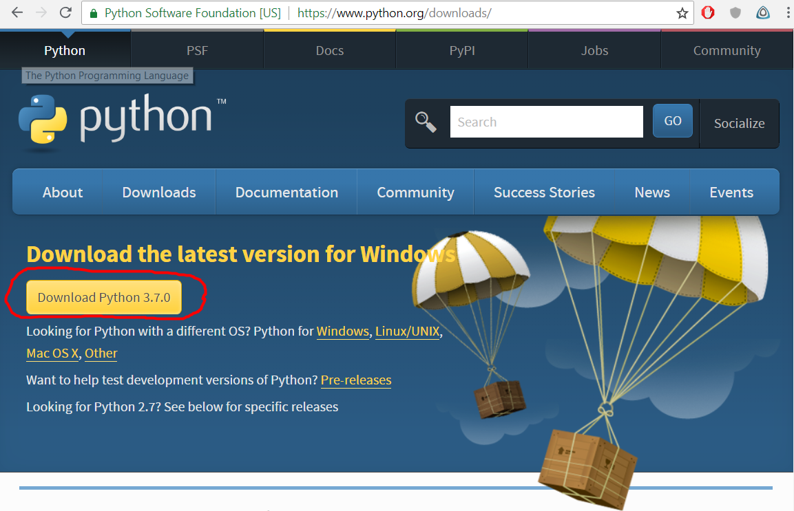
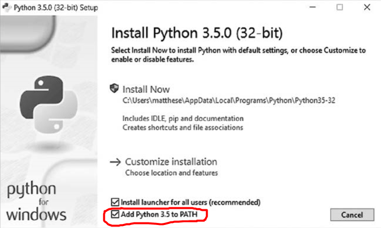
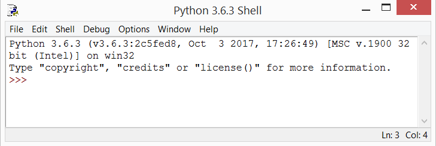
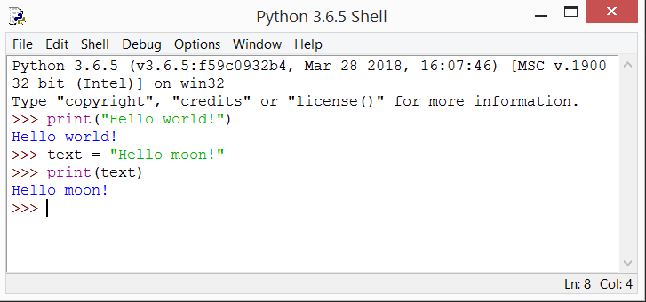
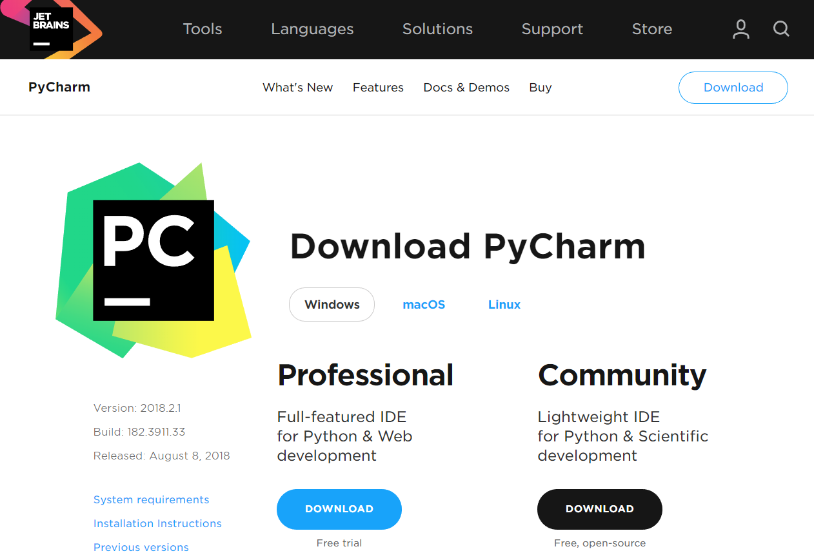
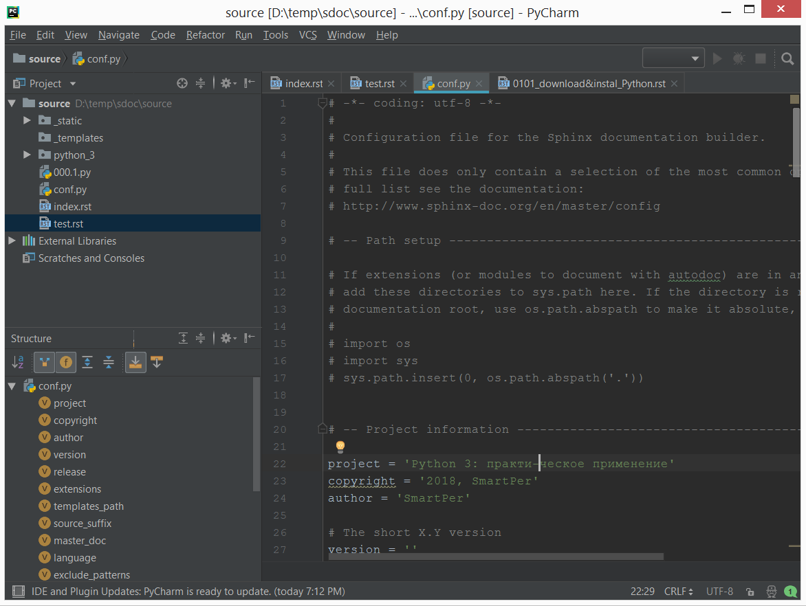

2. Python начало¶
2.1. Установка Python¶
Python существует в нескольких разных версиях, с разными вариантами конфигурации в каждой операционной системе. Это приложение пригодится вам в том случае, если описание из главы 1 не сработало или вы захотите установить другую версию Python вместо той, которая поставлялась с вашей системой.
2.1.1. Python в Windows¶
Python обычно не включается в установку Windows по умолчанию, и все же вам стоит проверить, присутствует ли Python в вашей системе. Также можно открыть окно командой меню Пуск (Start). В открывшемся терминальном окне введите команду:
python --version
Если вы получили подобный результат:
Python 3.6.5 ...
значит, язык Python уже установлен в вашей системе (хотя вы, возможно, захотите установить более новую версию). Если вы получите сообщение об ошибке, то вы должны загрузить и установить Python.
2.1.2. Установка Python 3 в Windows¶
Откройте страницу http://python.org/downloads/, щелкните на кнопке Download Python.
После скачивания запустите программу установки. В окне настройки установки нужно установить флажок «Add Python to PATH». Это необходимо для дальнейшего удобства запуска Python программ.
После установки можно ещё раз проверить какая версия Python установилась. Напечатав в командной строке виндос команду, которая вам уже знакома:
> python --version
Если вы получили подобный результат:
Python 3.6.5 ...
значит, язык Python уже установлен в вашей системе.
2.1.3. Редакторы кода¶
Программисты проводят много времени за написанием, чтением и редактированием кода. Очень важно, чтобы в используемом текстовом редакторе эта работа выполнялась по возможности эффективно. Эффективный редактор должен выделять структуру кода, чтобы вы могли обнаружить типичные ошибки во время работы. Также редактор должен поддерживать автоматическую расстановку отступов, маркеры для обозначения длины строки и комбинации клавиш для часто выполняемых операций.
Начинающему программисту рекомендуется использовать редактор, который поддерживает все эти функции, но не создает проблем на начальном этапе. Также желательно кое-что знать о более сложных редакторах, чтобы вы понимали, в какой момент можно задуматься над переходом.
2.1.3.1. IDLE¶
Это редактор, который поставляется с Python по умолчанию. Запустить данный редактор можно выполнив следующие команды для windows:
- нажмите на клавиатуре кнопку win (вместо надписи может быть изображение окошка) кнопка находиться в левом нижнем углу клавиатуры вторая слева от пробела.
- печатаем на клавиатуре слово: idle
- нажимаем Enter
Если все выполнили правильно вы увидите подобное окно:
Попробуйте в данном редакторе написать и запустить следующие программы:
- Напишите программу, которая выводит в консоль надпись: «Hello world!».
- Напишите программу, которая выводит в консоль надпись: «Hello moon!». Изначально выводимая фраза должна храниться в переменной с именем: text.
Если всё выполнено правильно, то вы можете увидеть подобный результат:
2.1.3.2. PyCharm¶
Удобный бесплатный редактор который используется большим числом питон программистов. Скачать его можно на сайте https://www.jetbrains.com/pycharm/download/#section=windows
Комъюнити версия является бесплатной версией.
PyCharm - это полноценная среда разработки, поддерживающая несколько языков программирования и включает в себя ряд полезных инструментов, о которых вы будете узнавать по мере профессионального роста.
Интерфейс программы PyCharm может выглядеть следующим образом.
2.2. Приложения на Python¶
2.2.1. Термины¶
2.2.2. Типы приложений¶
Условно приложения (программы) можно разделить несколько типов:
- консольные приложения - для работы с которыми работают, как правило, в режиме командной строки.
- десктоп приложеня - программы, которые мы запускаем в виндосе: калькулятор, текстовый редактор, браузер и т.п.
- мобильные приложения - программы, написанные и используемые на смартфонах.
- веб-приложения - программа, которая запускается в виндосе, но для работы ей необходимо подключение к Интернету, для обмена данными. Яркими примерами могут являться различные онлайн игры.
На питоне можно создавать приложения любых типов. И ограничения которые вы можете встретить в будущем скорее всего будут связаны либо с ограниченностью знаний или удобством разработки.
2.3. Python «print()» и именование переменных¶
2.3.1. Термины¶
2.3.2. Python «print()» - назначение¶
print() - данная команда используется для вывода текста в консоль. Также её удобно использовать для отладки приложений: поиска ошибок и проверки логики программы.
2.3.2.1. Синтаксис¶
print(<expression>)
<expression> - выражения, которые стоят внутри круглых скобок, будут выведены на экран.
Выражения могут иметь вид:
- строки или строчного выражения;
- математического выражения;
- переменной;
- а также любой комбинацией упомянутых выражений.
2.3.2.4. Пример 3¶
message = "Hello Python world!"
print(message)
Результат выполнения:
Hello Python world!
2.3.2.5. Пример 4¶
message = "Hi"
number = 3
print(message, 2, '+', number)
Результат выполнения:
Hi 2 + 3
2.3.3. Выбор имён переменных¶
При работе с переменными в языке Python необходимо соблюдать некоторые правила и рекомендации. Нарушение правил приведет к ошибке; рекомендации всего лишь помогают писать более понятный и удобочитаемый код. Работая с переменными, помните о следующем:
- Имена переменных могут состоять только из букв, цифр и символов подчеркивания. Они могут начинаться с буквы или символа подчеркивания, но не с цифры. Например, переменной можно присвоить имя message_1, но не 1_message.
- Пробелы в именах переменных запрещены, а для разделения слов в именах переменных используются символы подчеркивания. Например, имя greeting_message допустимо, а имя greeting message вызовет ошибку.
- Не используйте имена функций и ключевые слова Python в качестве имен переменных; иначе говоря, не используйте слова, которые зарезервированы в Python для конкретной цели, например слово print.
- Чтобы имя переменной не совпало с ключевым словом Python, достаточно делать 2-х составные имена, объединенные нижним подчеркиванием. Пример: print_text или first_name.
- Имена переменных должны быть короткими, но содержательными. Например, имя name лучше чем n, имя student_name лучше s_n, а имя name_length лучше length_of_persons_name.
- Будьте внимательны при использовании строчной буквы l и прописной буквы O, потому что они похожи на цифры 1 и 0.
Вероятно, вы не сразу научитесь создавать хорошие имена переменных, особенно когда ваши программы станут более сложными и интересными. Но когда вы начнете писать свои программы и читать код, написанный другими разработчиками, ваши имена переменных станут более содержательными.
Примечание
Пока ограничьтесь именами переменных, записанными в нижнем регистре, т.е. строчными (маленькими) буквами. Использование символов верхнего регистра не приведет к ошибке, и все же пока лучше обойтись без них.
2.3.4. Упражнения¶
Напишите отдельную программу для выполнения каждого из следующих упражнений. Сохраните каждую программу в файле, имя которого подчиняется стандартным правилам Python по использованию строчных букв и символов подчеркивания – например, simple_message.py и simple_messages.py.
- Простое сообщение: сохраните текстовое сообщение «Nice job!» в переменной и выведите его на экран.
- Простые сообщения: сохраните сообщение «Why are you doing this?» в переменной и выведите это сообщение. Затем замените значение переменной сообщением «Because we can!» и выведите новое сообщение.
- Вывести на экран пример: 2 + 2 = 4.